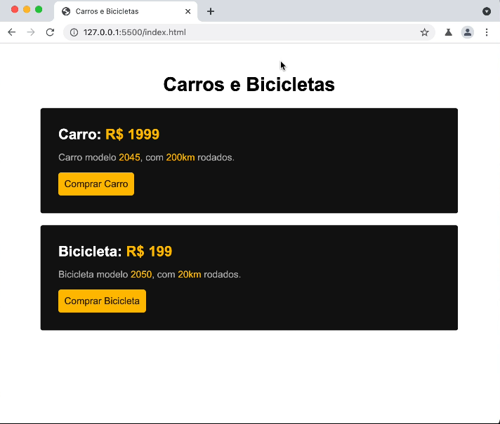

Recriar a mesma página da imagem, seguindo as seguintes condições de formatação:
Amarelo1 (preço/botão): #febe01
Amarelo2 (color botão): #332200
Preto: #111
Cinza: #b2b2b2
Font: Arial
Alinhar texto ao centro: text-align: center;
Arredondar bordas: border-radius: 4px;
Título principal: h1
Nome do produto: h2
Textos:
Carros e Bicicletas
Carro: R$ 1999
Carro modelo 2045, com 200km rodados.
Bicicleta: R$ 199
Bicicleta modelo 2050, com 20km rodados.

Achei o exercício bem bacana. Consegui montar a estrutura HTML corretamente e aplicar a maioria dos estilos. A única coisa que faltou pra ficar igual foi adicionar uma margin ao body e remover a margin padrão que existe no h2, então no meu ficou com um espaçamento um pouco maior ali, mas depois eu ajustei e fiz como ele mostrou na aula. Eu já tinha feito esse exercício há alguns meses atrás então isso me ajudou um pouco na sacada de colocar o link como display inline-block, normalmente eu talvez não lembrasse desse recurso, mas no fim deu certo.
Uma coisa que eu tava errando era que eu não coloquei esse "botão" como link, tava tentando criar ele com divs e ai o espaçamento tava ficando bem diferente porque as propriedades de cada tag mudam, mas depois que lembrei desse detalhe ai ficou bem mais fácil também.